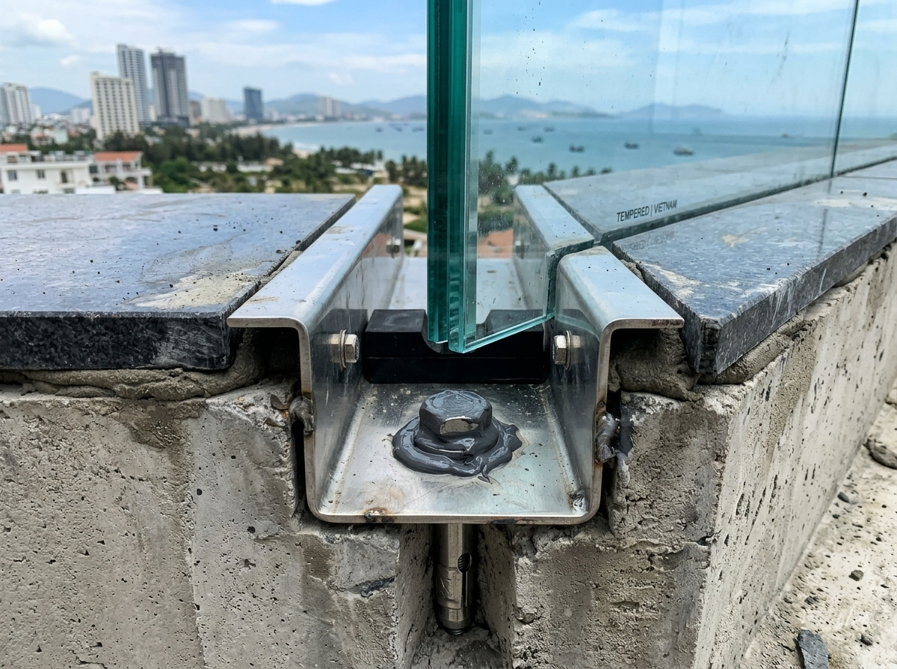

🔩 KIỂU 1: KHUÔN U INOX 304 ÂM ĐÁ + BƠM KEO TRÙM ĐẦU ỐC CHỐNG THẤM

Kiểu 1: Đặt Khuôn U Inox 304 Lên Bê Tông Trước → Bơm Keo Bọc Kín Đầu Bu-Lông → Ốp Đá Kẹp 2 Bên
Tắc-kê nở Inox khoan xuống giữa gờ bê tông 15×20cm (chỉ sâu 6–7cm, cách mặt sàn 8cm). Ngay sau khi siết ốc, thợ bơm keo Sika / Silicone dày trùm kín toàn bộ mũ ốc và vòng đệm dưới đáy máng U, đặt cục kê cao su đen lên trên rồi hạ kính. Hai bên má thanh U có ngàm đỡ để ốp đá Granite phẳng mặt.